Work In Progress
© 2017 Noel Golding
class: center, middle # Learn to code by programming video games! --- # Setup up Dev Env * We will need Google Chrome if you don't already have it go ahead and download it now. * create a folder on the desktop named `L2C` * open a text editor and have it fill 1/2 the screen. Notepad for Windows or TextEdit for Mac should work just fine, we don't need anything fancy. * Open the Google Chrome browser and have it fill in the other 1/2 of the screen * type `Hello, world` into the text editor and save it as `index.html` in the `L2C` folder * in the browser navigate the file you just saved. *TODO MAC* TextEdit > Preferences in the menu bar. On the New Document tab, select Plain Text in the Format section. *TODO Windows?* 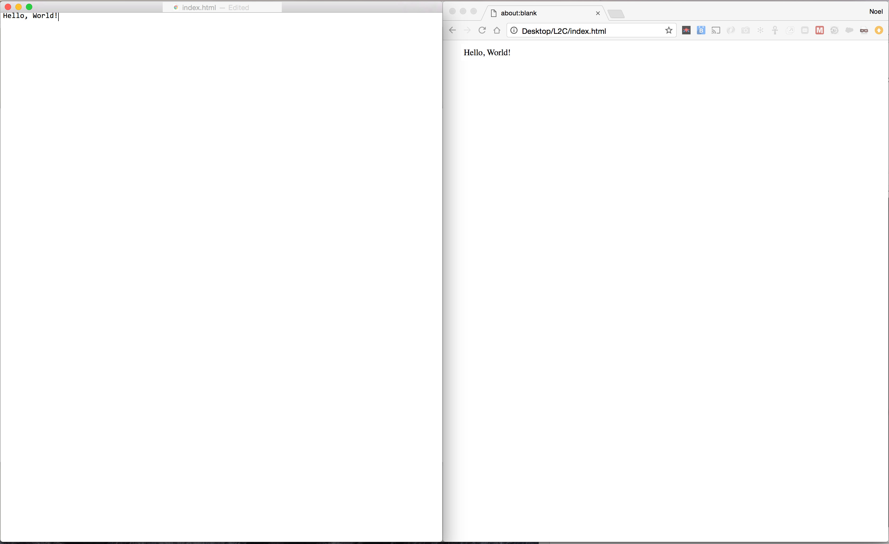 --- # Painting with the computer ```html <script> function main(){ // create painting surface canvas = document.createElement('canvas') document.body.appendChild(canvas); // get the paints and paint brushes ctx = canvas.getContext('2d'); // get some black paint ctx.fillStyle = 'black' ; // paint the entire canvas with the rectangle paintbrush ctx.fillRect(0, 0, canvas.width, canvas.height); // get some blue paint ctx.fillStyle = 'blue'; // paint a square with the rectangle paintbrush ctx.fillRect(25, 25, 100, 100); } window.addEventListener('load', main); </script> ``` Now save your changes ... **Notepad on Windows** * Ctrl + S **TextEdit on Mac** * Cmd + S ... and view the results **Chrome on Windows** * Ctrl + R **Chrome on Mac** * Cmd + R ??? * If anyone has any issues, now may be a good time to have the students open the console in developer tools and troubleshoot. Try not to open the developer console until it becomes necessary. We want to avoid information overload. * Otherwise continue. --- # Computer graphics coord system ```javascript ctx.fillRect(x, y, width, height); // x and y make the origin point, the origin is the top left corner. // width moves along the x axis from left to right. // height moves along the y axis from top to bottom. ``` Here, the canvas' origin is (0,0), the width is 300 and the height is 150. The square's origin is (25,25), this width is 100 and the height is 100. 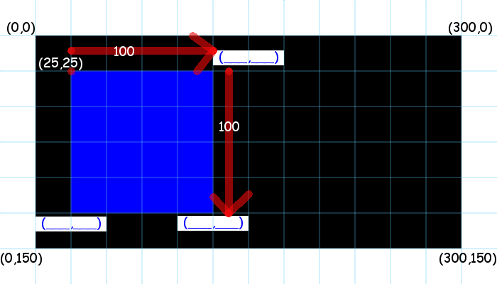 ??? * Have the students fill in the missing points of the rectangle. --- # Let out your inner artist Experiment and paint yourself a masterpiece! 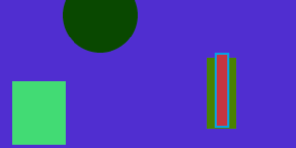 ??? handouts: * canvas drawing cheat sheet * graph paper * pencils * rulers * give them 5-10 minutes to play around. * if no one has tried overlapping shapes ask them to try, and discuss the results. * if no one has tried drawing shapes outside the bounds of the canvas, ask them to try and discuss the results. * if they are having fun and want to continue, you can give them an additional 5-10 miutes. Otherwise, time to move on. --- ###Before we continue, let's archive our work. *TODO shortcut keys* **Notepad on Windows** * File -> Save As -> `painting.html` * File -> Save As -> `index.html` **TextEdit on Mac** * File -> Duplicate -> `painting.html` * close duplicate window --- # Our General Game Plan 1. Sketch out the game board by hand 1. Paint the game board in code 1. Test drive the code 1. Define some rules of the game 1. Code the rules into the game 1. Test drive the code 1. Continue this process unti we are happy with the game We wont always know all the rules or exactly how we want the game to look and feel, but this is a good starting point and we can repeat the steps until we are happy with our game! --- # Let the games begin! TODO screenshots of the games we will be creating --- # Futbol ## The sketch This will help us determine where to position things on the screen. 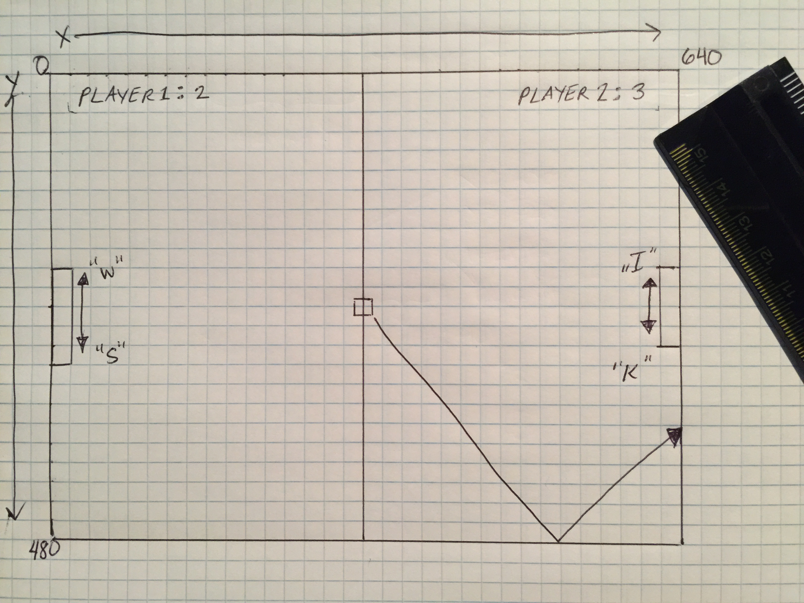 | Object |color | origin | width | height | |-----------------|----------|-----------|------------|-------------| | soccer field |lightgreen|(0, 0) |canvas.width|canvas.height| | the center line |darkgreen |(318, 0) |4 |canvas.height| | the ball |white |(312, 232) |16 |16 | | player 1 |red |(0, 190) |20 |100 | | player 2 |blue |(620, 190) |20 |100 | <hr/> *TODO* | Object |color| origin | width | height | |-----------------|------------|--------------|---------------| | player 1 score |red | (20, 190) | ? left justified | 20 | | player 2 score |blue | (620, 190) | ? right justified | 20 | --- # Futbol ## The code Some of you may be ready to try to draw the game field on your own. If so give it a shot and we will check with you later. For the rest of us, let's start by updating our painting to match the dimensions of our game design. Add this code just after we create the painting surface ```javascript // set the dimensions to match our game design canvas.width = 640; canvas.height = 480; ``` --- ***Our updated code should now look something like this.*** ```html <script> function main(){ // create painting surface canvas = document.createElement('canvas') document.body.appendChild(canvas); // set the dimensions to match our game design canvas.width = 640; canvas.height = 480; // get the paints and paint brushes ctx = canvas.getContext('2d'); // get some black paint ctx.fillStyle = 'black' ; // paint the entire canvas with the rectangle paintbrush ctx.fillRect(0, 0, canvas.width, canvas.height); // get some blue paint ctx.fillStyle = 'blue'; // paint a square with the rectangle paintbrush ctx.fillRect(25, 25, 100, 100); } window.addEventListener('load', main); </script> ``` Now save your changes ... **Notepad on Windows** * Ctrl + S **TextEdit on Mac** * Cmd + S ... and view the results **Chrome on Windows** * Ctrl + R **Chrome on Mac** * Cmd + R --- Let's keep the background and remove everything else that we have drawn. ***Our updated code should now look like this.*** ```html <script> function main(){ // create painting surface canvas = document.createElement('canvas') document.body.appendChild(canvas); // set the dimensions to match our game design canvas.width = 640; canvas.height = 480; // get the paints and paint brushes ctx = canvas.getContext('2d'); // get some black paint ctx.fillStyle = 'black' ; // paint the entire canvas with the rectangle paintbrush ctx.fillRect(0, 0, canvas.width, canvas.height); } window.addEventListener('load', main); </script> ``` Now save your changes ... **Notepad on Windows** * Ctrl + S **TextEdit on Mac** * Cmd + S ... and view the results **Chrome on Windows** * Ctrl + R **Chrome on Mac** * Cmd + R --- # Futbol ## The code OK, let's draw the game field let's replace the current background with the game field. ```javascript strikethrough // get some black paint ctx.fillStyle = 'black' ; // paint the entire canvas with the rectangle paintbrush ctx.fillRect(0, 0, canvas.width, canvas.height); ``` ```javascript // paint the grass ctx.fillStyle = 'lightgreen' ; ctx.fillRect(0, 0, canvas.width, canvas.height); // paint the centerline ctx.fillStyle = 'darkgreen' ; ctx.fillRect(318, 0, 4, canvas.height); ``` ***Our updated full code listing should now look like this.*** ```html <script> function main(){ // create painting surface canvas = document.createElement('canvas') document.body.appendChild(canvas); // set the dimensions to match our game design canvas.width = 640; canvas.height = 480; // get the paints and paint brushes ctx = canvas.getContext('2d'); // paint the grass ctx.fillStyle = 'lightgreen' ; ctx.fillRect(0, 0, canvas.width, canvas.height); // paint the centerline ctx.fillStyle = 'darkgreen' ; ctx.fillRect(318, 0, 4, canvas.height); } window.addEventListener('load', main); </script> ``` Now save your changes ... **Notepad on Windows** * Ctrl + S **TextEdit on Mac** * Cmd + S ... and view the results **Chrome on Windows** * Ctrl + R **Chrome on Mac** * Cmd + R After we complete a code section, we should save the file and refresh the browser. This way we can see our progress. If you don't know these shortcuts to save and refresh, write them down. --- # Futbol ## The code Let's draw the ball ```javascript // draw the ball ctx.fillStyle = 'white' ; ctx.fillRect(312, 232, 16, 16); ``` --- ***Our updated full code listing.*** ```html <script> function main(){ // create painting surface canvas = document.createElement('canvas') document.body.appendChild(canvas); // set the dimensions to match our game design canvas.width = 640; canvas.height = 480; // get the paints and paint brushes ctx = canvas.getContext('2d'); // paint the grass ctx.fillStyle = 'lightgreen' ; ctx.fillRect(0, 0, canvas.width, canvas.height); // paint the centerline ctx.fillStyle = 'darkgreen' ; ctx.fillRect(318, 0, 4, canvas.height); // draw the ball ctx.fillStyle = 'white' ; ctx.fillRect(312, 232, 16, 16); } window.addEventListener('load', main); </script> ``` Save your changes and view the results. *Did you remember your shortcut keys?* --- # Futbol ## The code Let's draw the players ```javascript // draw player 1 ctx.fillStyle = 'red' ; ctx.fillRect(0, 190, 20, 100); // draw player 2 ctx.fillStyle = 'blue' ; ctx.fillRect(620, 190, 20, 100); ``` ***Updated full code listing.*** ```html <script> function main(){ // create painting surface canvas = document.createElement('canvas') document.body.appendChild(canvas); // set the dimensions to match our game design canvas.width = 640; canvas.height = 480; // get the paints and paint brushes ctx = canvas.getContext('2d'); // paint the grass ctx.fillStyle = 'lightgreen' ; ctx.fillRect(0, 0, canvas.width, canvas.height); // paint the centerline ctx.fillStyle = 'darkgreen' ; ctx.fillRect(318, 0, 4, canvas.height); // draw the ball ctx.fillStyle = 'white' ; ctx.fillRect(312, 232, 16, 16); // draw player 1 ctx.fillStyle = 'red' ; ctx.fillRect(0, 190, 20, 100); // draw player 2 ctx.fillStyle = 'blue' ; ctx.fillRect(620, 190, 20, 100); } window.addEventListener('load', main); </script> ``` Save your changes and view the results. *We should check in with our friends that forged ahead on their own.* --- # Futbol ## The rules 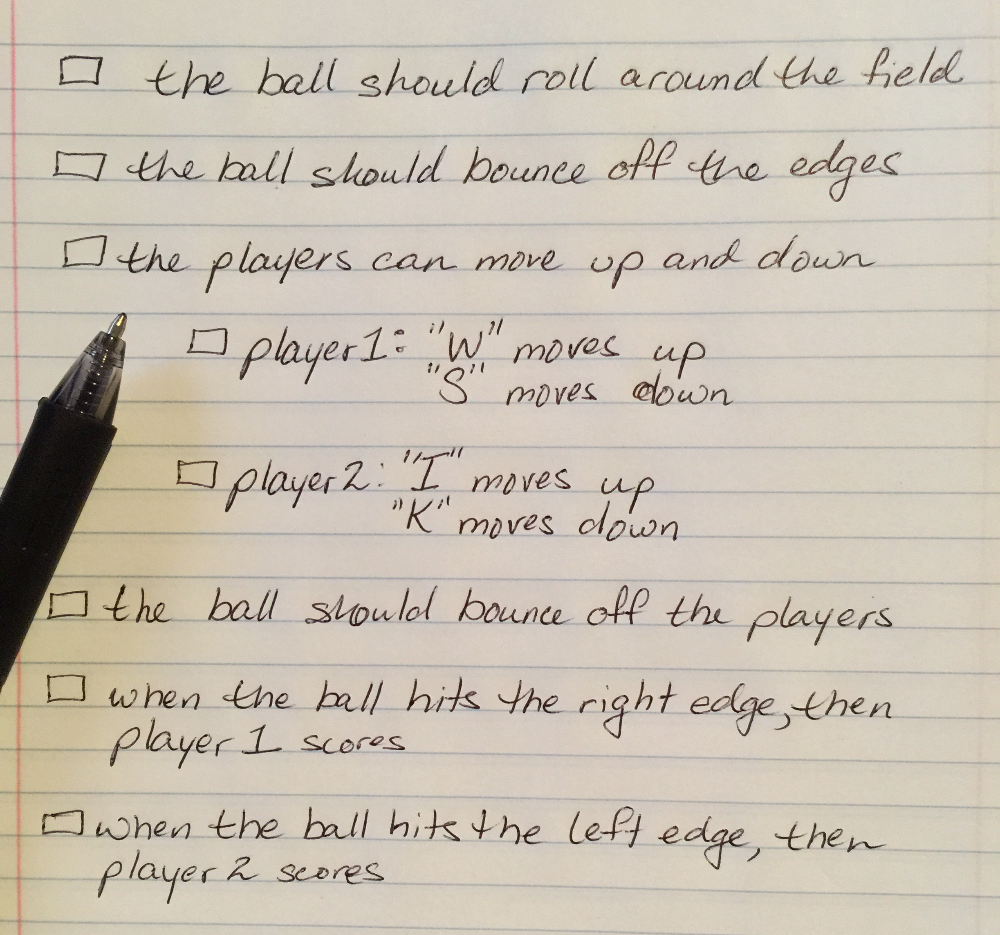 --- # Futbol ## Let's get the ball rolling! 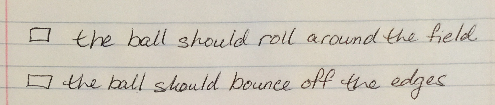 So the rules say the ball should move around the screen and bounce off the walls. How are we going to make this happen? Well a video game is just an interactive animation, so let's look at how animations work. ??? TODO Show flip book - get good descriptions on animation loops 1. update the picture 2. show it 3. repeat forever! --- # Futbol Let's <a href="#refactor_dt" name="refactor_ref">refactor</a> our code a bit so we can get ready to get the ball bouncing. ```javascript ballX = 312; ballY = 232; // draw the ball ctx.fillStyle = 'white' ; ctx.fillRect(ballX, ballY, 16, 16); ``` ***Updated full code listing.*** ```html <script> function main(){ ballX = 312; ballY = 232; // create painting surface canvas = document.createElement('canvas') document.body.appendChild(canvas); // set the dimensions to match our game design canvas.width = 640; canvas.height = 480; // get the paints and paint brushes ctx = canvas.getContext('2d'); // draw the grass ctx.fillStyle = 'lightgreen' ; ctx.fillRect(0, 0, canvas.width, canvas.height); // paint the centerline ctx.fillStyle = 'darkgreen' ; ctx.fillRect(318, 0, 4, canvas.height); // draw the ball ctx.fillStyle = 'white' ; ctx.fillRect(ballX, ballY, 16, 16); // draw player 1 ctx.fillStyle = 'red' ; ctx.fillRect(0, 190, 20, 100); // draw player 2 ctx.fillStyle = 'blue' ; ctx.fillRect(620, 190, 20, 100); } window.addEventListener('load', main); </script> ``` Save your changes and view the results. *If nothing changed visibly, we made a successful refactor!* --- # Futbol Let's create the animation loop and try it out. ```javascript // declare animation loop here function animloop(){ // update the ball's position ballX = ballX + 5; // redraw the ball ctx.fillStyle = 'white' ; ctx.fillRect(ballX, ballY, 16, 16); // repeat the animation loop requestAnimationFrame(() => animloop()); } // start the animation loop animloop(); ``` `requestAnimationFrame(() => animloop());` This looks scary 😱. Don't worry, this is just telling the browser to restart at the beginning of the animation loop. Remember our flipbook, this just means start over at page one. ***Updated full code listing.*** ```html <script> function main(){ ballX = 312; ballY = 232; // create painting surface canvas = document.createElement('canvas') document.body.appendChild(canvas); // set the dimensions to match our game design canvas.width = 640; canvas.height = 480; // get the paints and paint brushes ctx = canvas.getContext('2d'); // draw the grass ctx.fillStyle = 'lightgreen' ; ctx.fillRect(0, 0, canvas.width, canvas.height); // paint the centerline ctx.fillStyle = 'darkgreen' ; ctx.fillRect(318, 0, 4, canvas.height); // draw the ball ctx.fillStyle = 'white' ; ctx.fillRect(ballX, ballY, 16, 16); // draw player 1 ctx.fillStyle = 'red' ; ctx.fillRect(0, 190, 20, 100); // draw player 2 ctx.fillStyle = 'blue' ; ctx.fillRect(620, 190, 20, 100); // animation loop here function animloop(){ // update the ball's position ballX = ballX + 5; // redraw the ball ctx.fillStyle = 'white' ; ctx.fillRect(ballX, ballY, 16, 16); // repeat the animation loop requestAnimationFrame(() => animloop()); } // start the animation loop animloop(); } window.addEventListener('load', main); </script> ``` Save your changes and view the results. --- # Futbol So what went wrong? We need to redraw everthing not just the ball so we don't leave a trail. Ok, not a problem, time to refactor. We need to expand our game loop to include all the items on the board. 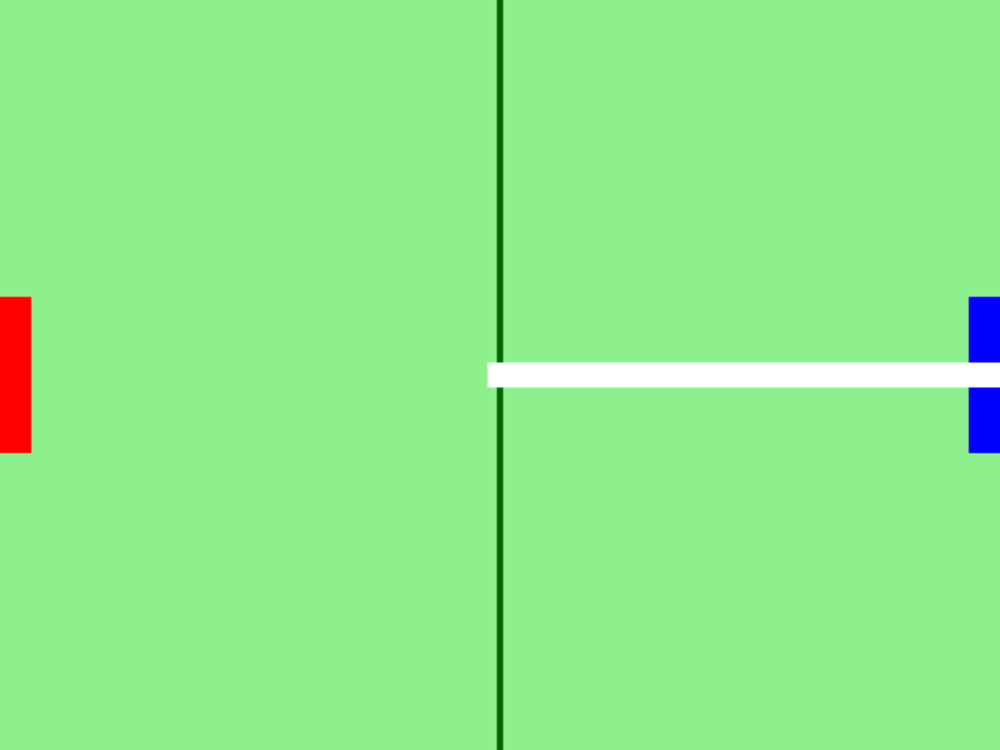 --- # Futbol Our code should now look like this. Let's try this out. ```html <script> function main(){ ballX = 312; ballY = 232; // create painting surface canvas = document.createElement('canvas') document.body.appendChild(canvas); // get the paints and paint brushes ctx = canvas.getContext('2d'); // set the dimensions to match our game design canvas.width = 640; canvas.height = 480; // animation loop here function animloop(){ // paint the grass ctx.fillStyle = 'lightgreen' ; ctx.fillRect(0, 0, canvas.width, canvas.height); // paint the centerline ctx.fillStyle = 'darkgreen' ; ctx.fillRect(318, 0, 4, canvas.height); // update the ball's position ballX = ballX + 5; // draw the ball ctx.fillStyle = 'white' ; ctx.fillRect(ballX, ballY, 16, 16); // draw player 1 ctx.fillStyle = 'red' ; ctx.fillRect(0, 190, 20, 100); // draw player 2 ctx.fillStyle = 'blue' ; ctx.fillRect(620, 190, 20, 100); // repeat the animation loop requestAnimationFrame(() => animloop()); } // start the animation loop animloop(); } window.addEventListener('load', main); </script> ``` --- # Futbol Cool, that's better. But the ball is going off the screen. Let's get the ball to bounce off the side sides. We need to add some variables to track the ball's speed and <a href="#velocity_dt" name="velocity_ref">velocity</a>. ```javascript ballSpeed = 5; ballVelocityX = ballSpeed; ``` >Recall the graphics coord system: >Positive x is to the right >Negative x is to the left We can now use these variables to make the ball bounce. ```javascript // update the ball's position ballX = ballX + ballVelocityX; // check if the ball hit a left or right edge if (ballX < 0) { ballX = 0; ballVelocityX = ballSpeed; } else if (ballX + 16 > canvas.width) { ballX = canvas.width - 16; ballVelocityX = -ballSpeed; } ``` --- ***Our updated full code listing.*** ```html <script> function main(){ ballX = 312; ballY = 232; ballSpeed = 5; ballVelocityX = ballSpeed; // create painting surface canvas = document.createElement('canvas') document.body.appendChild(canvas); // get the paints and paint brushes ctx = canvas.getContext('2d'); // set the dimensions to match our game design canvas.width = 640; canvas.height = 480; // animation loop here function animloop(){ // paint the grass ctx.fillStyle = 'lightgreen' ; ctx.fillRect(0, 0, canvas.width, canvas.height); // paint the centerline ctx.fillStyle = 'darkgreen' ; ctx.fillRect(318, 0, 4, canvas.height); // update the ball's position ballX = ballX + ballVelocityX; // check if the ball hit a left or right edge if (ballX + 16 > canvas.width) { ballX = canvas.width - 16; ballVelocityX = -ballSpeed; } else if (ballX < 0) { ballX = 0; ballVelocityX = ballSpeed; } // draw the ball ctx.fillStyle = 'white' ; ctx.fillRect(ballX, ballY, 16, 16); // draw player 1 ctx.fillStyle = 'red' ; ctx.fillRect(0, 190, 20, 100); // draw player 2 ctx.fillStyle = 'blue' ; ctx.fillRect(620, 190, 20, 100); // repeat the animation loop requestAnimationFrame(() => animloop()); } // start the animation loop animloop(); } window.addEventListener('load', main); </script> ``` Save your changes and view the results. --- # Futbol Well we have the ball bouncing back and forth, but we need the ball to be able to move in a diagnal direction. If we move along the X and the Y axis at the same time, we can move diagonally, so let's give the ball a velocity in the Y direction as well. ```javascript ballVelocityY = ballSpeed; ``` Now we can check if the ball has hit the top or bottom edges. ```javascript ballY = ballY + ballVelocityY; // check if the ball hit a top or bottom edge if (ballY + 16 > 480) { ballY = 480 - 16; ballVelocityY = -ballSpeed; } else if (ballY < 0) { ballY = 0; ballVelocityY = ballSpeed; } ``` --- ***Our updated full code listing.*** ```html <script> function main(){ ballX = 312; ballY = 232; ballSpeed = 5; ballVelocityX = ballSpeed; ballVelocityY = ballSpeed; // create painting surface canvas = document.createElement('canvas') document.body.appendChild(canvas); // get the paints and paint brushes ctx = canvas.getContext('2d'); // set the dimensions to match our game design canvas.width = 640; canvas.height = 480; // animation loop here function animloop(){ // paint the grass ctx.fillStyle = 'lightgreen' ; ctx.fillRect(0, 0, canvas.width, canvas.height); // paint the centerline ctx.fillStyle = 'darkgreen' ; ctx.fillRect(318, 0, 4, canvas.height); // update the ball's position ballX = ballX + ballVelocityX; ballY = ballY + ballVelocityY; // check if the ball hit a top or bottom edge if (ballY + 16 > 480) { ballY = 480 - 16; ballVelocityY = -ballSpeed; } else if (ballY < 0) { ballY = 0; ballVelocityY = ballSpeed; } // check if the ball hit a left or right edge if (ballX + 16 > canvas.width) { ballX = canvas.width - 16; ballVelocityX = -ballSpeed; } else if (ballX < 0) { ballX = 0; ballVelocityX = ballSpeed; } // draw the ball ctx.fillStyle = 'white' ; ctx.fillRect(ballX, ballY, 16, 16); // draw player 1 ctx.fillStyle = 'red' ; ctx.fillRect(0, 190, 20, 100); // draw player 2 ctx.fillStyle = 'blue' ; ctx.fillRect(620, 190, 20, 100); // repeat the animation loop requestAnimationFrame(() => animloop()); } // start the animation loop animloop(); } window.addEventListener('load', main); </script> ``` Save your changes and view the results. --- # Futbol 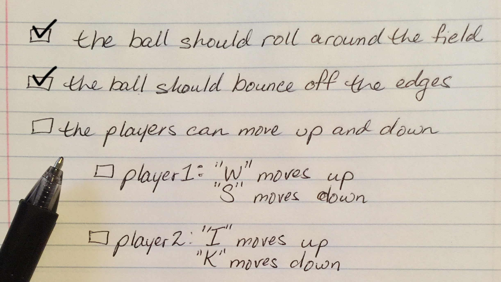 --- Let's do some refactoring in preparation of making the players movable. The players can only move up and down, so they only need a Y velocity. ```javascript playerSpeed = 8; player1Y = 190; player2Y = 190; player1VelocityY = 0; player2VelocityY = 0; ``` --- Now, let's control those players. First we need to capture keyboard input ```javascript // capture keyboard input keyspressed = {}; window.addEventListener('keydown', (e) => keyspressed[e.code] = true); window.addEventListener('keyup', (e) => delete keyspressed[e.code]); ``` --- We have to put the code that handles the input and moves the players into the animation loop ```javascript // handle player input // player 1 (on the left) uses 'W' to move up and 'S' to move down if("KeyW" in keyspressed) { player1VelocityY = -playerSpeed; } else if ("KeyS" in keyspressed){ player1VelocityY = playerSpeed; } else { player1VelocityY = 0; } // player 2 (on the right) uses 'I' to move up and 'K' to move down if("KeyI" in keyspressed) { player2VelocityY = -playerSpeed; } else if ("KeyK" in keyspressed){ player2VelocityY = playerSpeed; } else { player2VelocityY = 0; } ``` --- Update the players positions if the appropriate keys have been pressed. Also remember, like the ball, the players should not go out of bounds. ```javascript // update the player's positions player1Y = player1Y + player1VelocityY; player2Y = player2Y + player2VelocityY; // stop the players from going out of bounds if (player1Y < 0) { player1Y = 0; } else if (player1Y + 100 > 480) { player1Y = 480 - 100; } if (player2Y < 0) { player2Y = 0; } else if (player2Y + 100 > 480) { player2Y = 480 - 100; } // draw player 1 ctx.fillStyle = 'red' ; ctx.fillRect(0, player1Y, 20, 100); // draw player 2 ctx.fillStyle = 'blue' ; ctx.fillRect(620, player2Y, 20, 100); ``` --- ***Our updated full code listing.*** ```html <script> function main(){ ballX = 312; ballY = 232; ballSpeed = 5; ballVelocityX = ballSpeed; ballVelocityY = ballSpeed; playerSpeed = 8; player1Y = 190; player2Y = 190; player1VelocityY = 0; player2VelocityY = 0; // create painting surface canvas = document.createElement('canvas') document.body.appendChild(canvas); // get the paints and paint brushes ctx = canvas.getContext('2d'); // set the dimensions to match our game design canvas.width = 640; canvas.height = 480; // capture keyboard input keyspressed = {}; window.addEventListener('keydown', (e) => keyspressed[e.code] = true); window.addEventListener('keyup', (e) => delete keyspressed[e.code]); // animation loop here function animloop(){ // handle player input // player 1 (on the left) uses 'W' to move up and 'S' to move down if("KeyW" in keyspressed) { player1VelocityY = -playerSpeed; } else if ("KeyS" in keyspressed){ player1VelocityY = playerSpeed; } else { player1VelocityY = 0; } // player 2 (on the right) uses 'I' to move up and 'K' to move down if("KeyI" in keyspressed) { player2VelocityY = -playerSpeed; } else if ("KeyK" in keyspressed){ player2VelocityY = playerSpeed; } else { player2VelocityY = 0; } // paint the grass ctx.fillStyle = 'lightgreen' ; ctx.fillRect(0, 0, canvas.width, canvas.height); // paint the centerline ctx.fillStyle = 'darkgreen' ; ctx.fillRect(318, 0, 4, canvas.height); // update the ball's position ballX = ballX + ballVelocityX; ballY = ballY + ballVelocityY; // check if the ball hit a top or bottom edge if (ballY + 16 > 480) { ballY = 480 - 16; ballVelocityY = -ballSpeed; } else if (ballY < 0) { ballY = 0; ballVelocityY = ballSpeed; } // check if the ball hit a left or right edge if (ballX + 16 > canvas.width) { ballX = canvas.width - 16; ballVelocityX = -ballSpeed; } else if (ballX < 0) { ballX = 0; ballVelocityX = ballSpeed; } // draw the ball ctx.fillStyle = 'white' ; ctx.fillRect(ballX, ballY, 16, 16); // update the player's positions player1Y = player1Y + player1VelocityY; player2Y = player2Y + player2VelocityY; // stop the players from going out of bounds if (player1Y < 0) { player1Y = 0; } else if (player1Y + 100 > 480) { player1Y = 480 - 100; } if (player2Y < 0) { player2Y = 0; } else if (player2Y + 100 > 480) { player2Y = 480 - 100; } // draw player 1 ctx.fillStyle = 'red' ; ctx.fillRect(0, player1Y, 20, 100); // draw player 2 ctx.fillStyle = 'blue' ; ctx.fillRect(620, player2Y, 20, 100); // repeat the animation loop requestAnimationFrame(() => animloop()); } // start the animation loop animloop(); } window.addEventListener('load', main); </script> ``` Save your changes and view the results. --- # Futbol 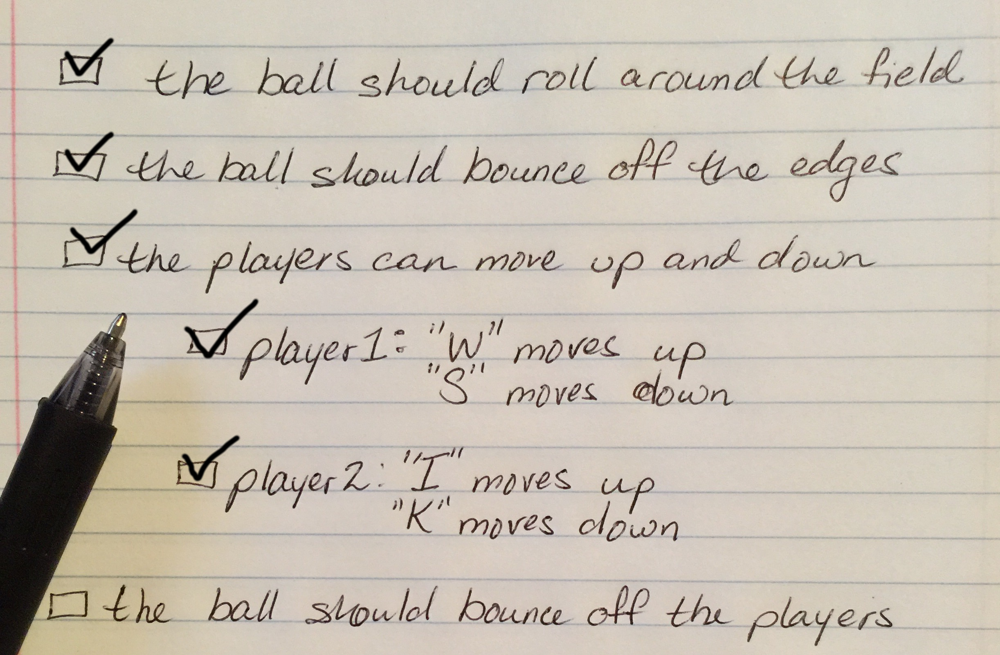 --- Here we are going to introduce collision detection. TODO draw AABB collision detection diagram. Provide brief description. So here is what that looks like in code. ```javascript function rectsIntersect(r1, r2) { // r1 and r2 provide the x, y, width and height of the rectangles rect1 = { left :r1[0], top :r1[1], right :r1[0] + r1[2], bottom :r1[1] + r1[3] }; rect2 = { left :r2[0], top :r2[1], right :r2[0] + r2[2], bottom :r2[1] + r2[3] }; return ( rect1.left < rect2.right && rect1.right > rect2.left && rect1.top < rect2.bottom && rect1.bottom > rect2.top ) } ``` What's with all the colons `:` square brackets `[ ]` and ampersands `&&`? Don't worry, we'll talk about that in just a little bit. For now, let's just add this code above the main function. Save your changes and ensure nothing has broken. Now might be a good time to open the developers console if we have not done so yet. --- Now we can use our collision detection function to handle when the ball collides with a player. ```javascript // check if the ball collides with a player ballRect = [ballX, ballY, 16, 16]; player1Rect = [0, player1Y, 20, 100]; player2Rect = [620, player2Y, 20, 100]; if (rectsIntersect(ballRect, player1Rect)) { // bounce the ball back to the right ballX = 20; ballVelocityX = ballSpeed; } else if (rectsIntersect(ballRect, player2Rect)){ // bounce the ball back to the left ballX = 620 - 20; ballVelocityX = -ballSpeed; } ``` --- ***Our updated full code listing.*** ```html <script> function rectsIntersect(r1, r2) { // r1 and r2 provide the x, y, width and height of the rectangles rect1 = { left :r1[0], top :r1[1], right :r1[0] + r1[2], bottom :r1[1] + r1[3] }; rect2 = { left :r2[0], top :r2[1], right :r2[0] + r2[2], bottom :r2[1] + r2[3] }; return ( rect1.left < rect2.right && rect1.right > rect2.left && rect1.top < rect2.bottom && rect1.bottom > rect2.top ) } function main(){ ballX = 312; ballY = 232; ballSpeed = 5; ballVelocityX = ballSpeed; ballVelocityY = ballSpeed; playerSpeed = 8; player1Y = 190; player2Y = 190; player1VelocityY = 0; player2VelocityY = 0; // create painting surface canvas = document.createElement('canvas') document.body.appendChild(canvas); // get the paints and paint brushes ctx = canvas.getContext('2d'); // set the dimensions to match our game design canvas.width = 640; canvas.height = 480; // capture keyboard input keyspressed = {}; window.addEventListener('keydown', (e) => keyspressed[e.code] = true); window.addEventListener('keyup', (e) => delete keyspressed[e.code]); // animation loop here function animloop(){ // handle player input // player 1 (on the left) uses 'W' to move up and 'S' to move down if("KeyW" in keyspressed) { player1VelocityY = -playerSpeed; } else if ("KeyS" in keyspressed){ player1VelocityY = playerSpeed; } else { player1VelocityY = 0; } // player 2 (on the right) uses 'I' to move up and 'K' to move down if("KeyI" in keyspressed) { player2VelocityY = -playerSpeed; } else if ("KeyK" in keyspressed){ player2VelocityY = playerSpeed; } else { player2VelocityY = 0; } // paint the grass ctx.fillStyle = 'lightgreen' ; ctx.fillRect(0, 0, canvas.width, canvas.height); // paint the centerline ctx.fillStyle = 'darkgreen' ; ctx.fillRect(318, 0, 4, canvas.height); // update the ball's position ballX = ballX + ballVelocityX; ballY = ballY + ballVelocityY; // check if the ball hit a top or bottom edge if (ballY + 16 > 480) { ballY = 480 - 16; ballVelocityY = -ballSpeed; } else if (ballY < 0) { ballY = 0; ballVelocityY = ballSpeed; } // check if the ball hit a left or right edge if (ballX + 16 > canvas.width) { ballX = canvas.width - 16; ballVelocityX = -ballSpeed; } else if (ballX < 0) { ballX = 0; ballVelocityX = ballSpeed; } // draw the ball ctx.fillStyle = 'white' ; ctx.fillRect(ballX, ballY, 16, 16); player1Y = player1Y + player1VelocityY; player2Y = player2Y + player2VelocityY; // stop the players from going out of bounds if (player1Y < 0) { player1Y = 0; } else if (player1Y + 100 > 480) { player1Y = 480 - 100; } if (player2Y < 0) { player2Y = 0; } else if (player2Y + 100 > 480) { player2Y = 480 - 100; } // draw player 1 ctx.fillStyle = 'red' ; ctx.fillRect(0, player1Y, 20, 100); // draw player 2 ctx.fillStyle = 'blue' ; ctx.fillRect(620, player2Y, 20, 100); // check if the ball collides with a player ballRect = [ballX, ballY, 16, 16]; player1Rect = [0, player1Y, 20, 100]; player2Rect = [620, player2Y, 20, 100]; if (rectsIntersect(ballRect, player1Rect)) { // bounce the ball back to the right ballX = 20; ballVelocityX = ballSpeed; } else if (rectsIntersect(ballRect, player2Rect)){ // bounce the ball back to the left ballX = 620 - 20; ballVelocityX = -ballSpeed; } // repeat the animation loop requestAnimationFrame(() => animloop()); } // start the animation loop animloop(); } window.addEventListener('load', main); </script> ``` Save your changes and view the results. --- # Futbol --- TODO code to keep score ```javascript player1Score = 0; player2Score = 0; // if the ball hits the left wall, then player 2 scores // if the ball hits the right wall, then player 1 scores if (ballX < 0) { player2Score = player2Score + 1; console.log(player2Score); ... } else if (this.ballX + 16 > this.canvas.width) { this.player1Score = this.player1Score + 1; console.log(player1Score); ... } ``` --- 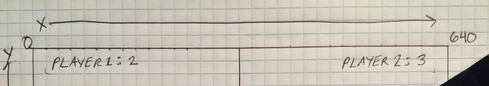 ```javascript strikethrough console.log(player2Score); console.log(player1Score); ``` ```javascript // draw the scores ctx.font = "20px monospace"; ctx.textAlign = 'left'; ctx.fillStyle = 'red'; ctx.fillText("Player 1: " + player1Score, 20, 16); ctx.fillStyle = 'blue'; ctx.textAlign = 'right'; ctx.fillText("Player 2: " + player2Score, 620, 16); ``` TODO details and full code listing --- ##You did it! 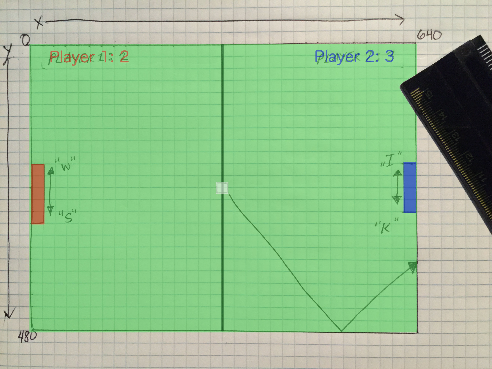 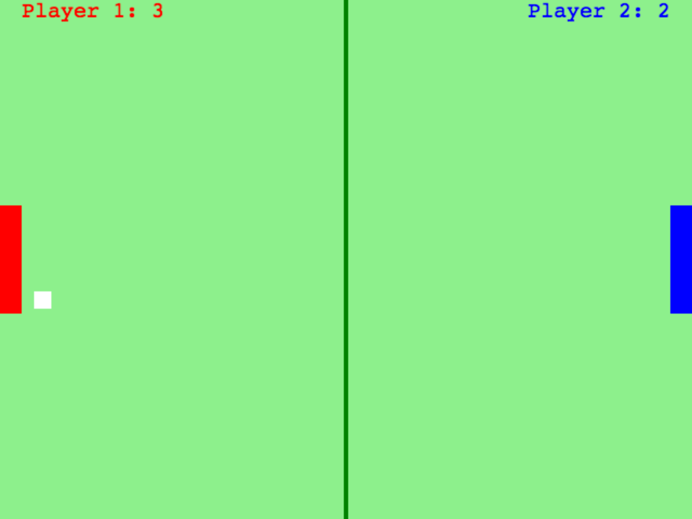 --- TODO challenges, next steps can you find the bug? --- ###Before we continue, let's archive our work. *TODO shortcut keys* **Notepad on Windows** * File -> Save As -> `futbol.html` * File -> Save As -> `index.html` **TextEdit on Mac** * File -> Duplicate -> `futbol.html` * close duplicate window --- class: game saywhat # Say What? 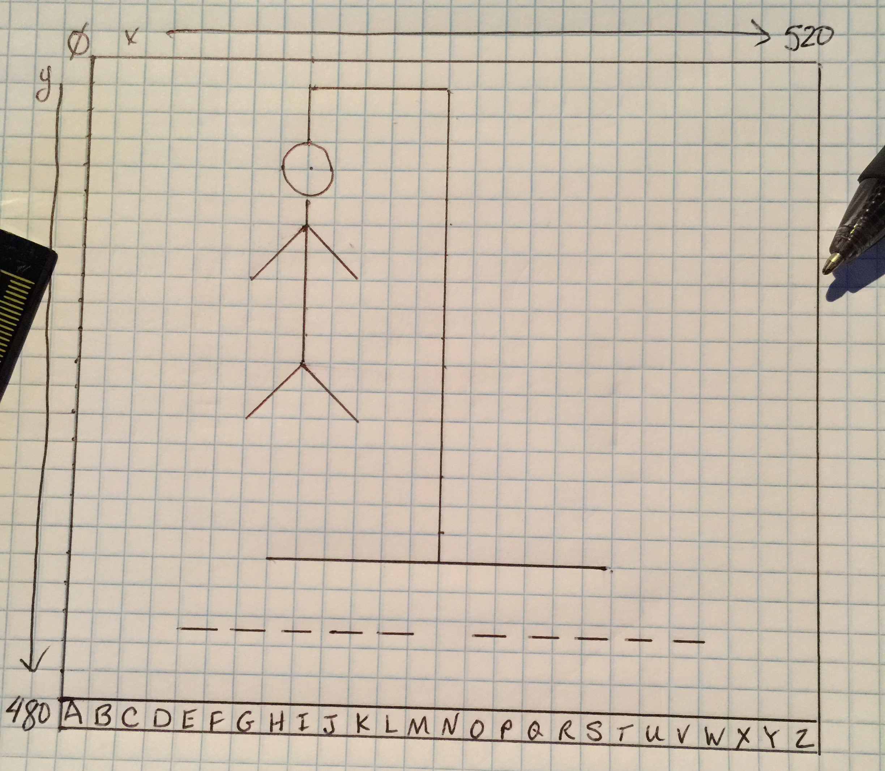 canvas dimensions: 520 X 480 background: black foreground: white | Object |info | |-------------------|---------------------------------------------| | gallows |line (160, 60)-(160, 20)-(260, 20)-(260, 340)| | gallows base |line (140, 340)-(380, 340) | | head |circle center: (160, 80), radius: 20 | | body |line (160, 100)-(160, 220) | | left arm |line (160, 120)-(120, 160) | | right arm |line (160, 120)-(200, 160) | | left leg |line (160, 220)-(120, 260) | | right leg |line (160, 220)-(200, 260) | | word to guess |? center aligned | | letters to choose |? 26 letters | --- ```html <script> letters = "ABCDEFGHIJKLMNOPQRSTUVWXYZ"; words = [ "Hot Apple Cider", "Apple", "Banana", "Happy New Year", "Orange", "Grape", "Harry Potter", "Strawberry", "Vanilla", "Chocolate", "Pool", "Happy Birthday", "Zebra", "Hot Fudge Sundae", "Watermelon", "Hop on Spider Monkey", "Merry Christmas", ]; function main() { maxIncorrectGuesses = 6; word_index = 0; availableLetters = letters.split(''); // create painting surface canvas = document.createElement('canvas') document.body.appendChild(canvas); // get the paints and paint brushes ctx = canvas.getContext('2d'); // set the dimensions to match our game design canvas.width = 520; canvas.height = 480; // capture keyboard and mouse input keyspressed = {}; window.addEventListener('keydown', (e) => keyspressed[e.code] = true); window.addEventListener('keyup', (e) => delete keyspressed[e.code]); canvas.addEventListener('mousedown', (e) => onMouseDown(e)); nextWord(); function nextWord(){ clickContinue = false; incorrectGuesses = 0; word_index = Math.floor(Math.random() * words.length); console.log(word_index); availableLetters = letters.split(''); word2guess = words[word_index].toUpperCase(); hideWord2Guess(); } function hideWord2Guess(){ word2guess_ = word2guess.split('').fill("_"); // expose non-alpha characters for (i =0; i < word2guess.length; i++){ if(!letters.includes(word2guess[i])) { word2guess_[i] = word2guess[i]; } } } function onMouseDown(e){ if (e.offsetY > 460) { slot = Math.floor(e.offsetX/20); guess = availableLetters[slot]; if (guess != ''){ // remove this letter from avaiable guess availableLetters[slot] = ''; // check if letter exists in the word2guess if (word2guess.includes(guess)) { // find all occurences of the guess for (i=0; i < word2guess.length; i++){ if(word2guess[i] == guess){ word2guess_[i] = guess; } } } else { // incorrect guess incorrectGuesses = incorrectGuesses + 1; } } } } function update(){ if (incorrectGuesses >= maxIncorrectGuesses) { alert("Sorry you didn't guess the word.\nThe correct answer is:\n\n\t" + word2guess); nextWord(); } else if (!word2guess_.includes('_')){ alert("You guessed it!\n\n" + word2guess); nextWord(); } } function draw(){ // clear the screen ctx.fillStyle = 'black'; ctx.fillRect(0, 0, 520, 480); ctx.fillStyle = 'white'; ctx.strokeStyle = 'white'; ctx.textAlign = 'center'; ctx.textBaseline = 'middle'; ctx.font = "20px monospace"; // draw the letters to choose from for(i = 0; i < availableLetters.length; i++){ x = 20*i; cx = (20*i+10); ctx.strokeRect(x, 460, 20, 20); ctx.fillText(availableLetters[i], cx, 470); } // draw the gallows ctx.beginPath(); ctx.moveTo(160, 60); ctx.lineTo(160, 20); ctx.lineTo(260, 20); ctx.lineTo(260, 340); ctx.moveTo(140, 340); ctx.lineTo(380, 340); ctx.stroke(); // draw any body parts switch(incorrectGuesses){ case 6: // console.log("draw another leg"); ctx.beginPath(); ctx.moveTo(160, 220); ctx.lineTo(200, 260); ctx.stroke(); case 5: // console.log("draw a leg"); ctx.beginPath(); ctx.moveTo(160, 220); ctx.lineTo(120, 260); ctx.stroke(); case 4: // console.log("draw another arm"); ctx.beginPath(); ctx.moveTo(160, 120); ctx.lineTo(200, 160); ctx.stroke(); case 3: // console.log("draw an arm"); ctx.beginPath(); ctx.moveTo(160, 120); ctx.lineTo(120, 160); ctx.stroke(); case 2: // console.log("draw the body"); ctx.beginPath(); ctx.moveTo(160, 100); ctx.lineTo(160, 220); ctx.stroke(); case 1: // console.log("draw the head"); ctx.beginPath(); ctx.arc(160, 80, 20, 0, 2 * Math.PI, false); ctx.stroke(); } // draw the word to guess ctx.font = "20px monospace"; ctx.fillText(word2guess_.join(' '), 260, 380); } function gameloop(){ update(); draw(); requestAnimationFrame(() => gameloop()); } gameloop(); } window.addEventListener('load', main); </script> ``` --- 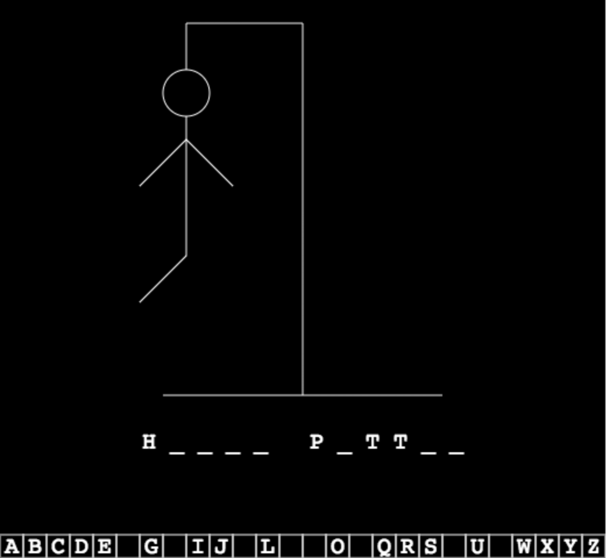 --- ###Before we continue, let's archive our work. *TODO shortcut keys* **Notepad on Windows** * File -> Save As -> `saywhat.html` * File -> Save As -> `index.html` **TextEdit on Mac** * File -> Duplicate -> `saywhat.html` * close duplicate window --- # Let's make a game engine! when we start to see repeated code we want to refactor. ```javascript class SimpleGameEngine{ constructor(width, height, bgcolor){ this.width = width; this.height = height; this.bgcolor = bgcolor; // create the canvas this.canvas = document.createElement('canvas'); document.body.appendChild(this.canvas); // set the width and height of th canvas this.canvas.width = this.width; this.canvas.height = this.height; // get the tools to paint this.ctx = this.canvas.getContext('2d'); // capture keyboard and mouse input this.keyspressed = {}; window.addEventListener('keydown', (e) => this.keyspressed[e.code] = true); window.addEventListener('keyup', (e) => delete this.keyspressed[e.code]); canvas.addEventListener('mousedown', (e) => this.onMouseDown(e)); } start(){ this.gameloop(); } onMouseDown(e){} update(){} draw(){} gameloop(){ this.update(); this.draw(); requestAnimationFrame(() => this.gameloop()); } } ``` --- class: game alienattack # Alien Attack show plan, handout, briefly discuss --- # Alien Attack ```html <script> class AlienAttack extends SimpleGameEngine{ draw(){ // paint the background this.ctx.fillStyle = this.bgcolor; this.ctx.fillRect(0, 0, this.canvas.width, this.canvas.height); } } function main(){ game = new AlienAttack(512, 480, 'darkblue'); game.start(); } window.addEventListener('load', main); </script> ``` --- # Futbol ## The code Let's draw the scoreboard ```javascript // draw player 1 score ctx.fillStyle = 'red' ; ctx.fillRect(0, 190, 20, 100); // draw player 2 score ctx.fillStyle = 'blue' ; ctx.fillRect(620, 190, 20, 100); ``` --- # Futbol ## The code Great job! Here is what our code looks like so far ```javascript // draw player 1 score ctx.fillStyle = 'red' ; ctx.fillRect(0, 190, 20, 100); // draw player 2 score ctx.fillStyle = 'blue' ; ctx.fillRect(620, 190, 20, 100); ``` --- # Alien Attack ## add images --- ## Challenge, refactor futbol and saywhat to use the SimpleGameEngine. --- ## Challenge, add images to futbol and saywhat. --- class: game tankmania # Let the games begin! ## Tank mania --- class: game sos ## Sink or swim --- class: game bugout ## Bug Out --- class: game snackman ## Snackman --- class: game legend ## Legend of Jonah --- # Final Challenge Make a game of your own provide students with some options that are clearly defined so they don't have to think about it, or they can come up with their own game idea. --- class: center, middle # Have fun, keep coding! --- # Appendix A ## Glossary of terms <dl> <a href="#refactor_ref" name="refactor_dt" class="dt">^ back ^</a><dt>Refactor</dt> <dd>Refactoring is making changes to the code to make the programmers life better, but should have no impact to the application. A successful refactor is when the users of your application don't know anything has happened.</dd> <dd><a href="https://en.wikipedia.org/wiki/Code_refactoring" target="_glossary">wikipedia</a></dd> <p></p> <a href="#velocity_ref" name="velocity_dt" class="dt">^ back ^</a> <dt>Velocity</dt> <dd>TODO : simplified definition</dd> <dd><a href="https://en.wikipedia.org/wiki/Velocity" target="_glossary">wikipedia</a></dd> </dl> --- # Appendix B ## Extras for fun here is a random painter program ```html <script> function main(){ // create painting surface canvas = document.createElement('canvas') document.body.appendChild(canvas); canvas.width = Math.floor(Math.random() * 720) + 80; canvas.height = Math.floor(Math.random() * 600) + 40; // get the paints and paint brushes ctx = canvas.getContext('2d'); getRandomColor = function(){ return [ Math.floor(Math.random() * 256), // red Math.floor(Math.random() * 256), // green Math.floor(Math.random() * 256), // blue Math.random() // alpha ]; } drawRandomRect = function(){ rgba = getRandomColor(); ctx.fillStyle = 'rgba(' + rgba[0] + ', ' + rgba[1] + ', ' + rgba[2] + ', ' + rgba[3] + ')'; rgba = getRandomColor(); ctx.strokeStyle = 'rgba(' + rgba[0] + ', ' + rgba[1] + ', ' + rgba[2] + ', ' + rgba[3] + ')'; x = Math.floor(Math.random() * canvas.width); y = Math.floor(Math.random() * canvas.height); w = Math.floor(Math.random() * canvas.width/2); h = Math.floor(Math.random() * canvas.height/2); lw = Math.floor(Math.random() * 5); ctx.lineWidth = lw; if (Math.random() < .5) { ctx.fillRect(x, y, w, h); } if (Math.random() < .5) { ctx.strokeRect(x, y, w, h); } } drawRandomCircle = function(){ rgba = getRandomColor(); ctx.fillStyle = 'rgba(' + rgba[0] + ', ' + rgba[1] + ', ' + rgba[2] + ', ' + rgba[3] + ')'; rgba = getRandomColor(); ctx.strokeStyle = 'rgba(' + rgba[0] + ', ' + rgba[1] + ', ' + rgba[2] + ', ' + rgba[3] + ')'; x = Math.floor(Math.random() * canvas.width); y = Math.floor(Math.random() * canvas.height); r = Math.floor(Math.random() * canvas.width/2); lw = Math.floor(Math.random() * 5); ctx.lineWidth = lw; ctx.beginPath(); ctx.arc(x, y, r, 0, 2 * Math.PI, false); if (Math.random() < .5) { ctx.fill(); } if (Math.random() < .5) { ctx.stroke(); } } drawRandomLine = function(){ rgba = getRandomColor(); ctx.strokeStyle = 'rgba(' + rgba[0] + ', ' + rgba[1] + ', ' + rgba[2] + ', ' + rgba[3] + ')'; x1 = Math.floor(Math.random() * canvas.width); y1 = Math.floor(Math.random() * canvas.height); x2 = Math.floor(Math.random() * canvas.width); y2 = Math.floor(Math.random() * canvas.height); lw = Math.floor(Math.random() * 5); ctx.lineWidth = lw; ctx.beginPath(); ctx.moveTo(x1, y1); ctx.lineTo(x2, y2); ctx.stroke(); } drawRandomTriangle = function(){ rgba = getRandomColor(); ctx.fillStyle = 'rgba(' + rgba[0] + ', ' + rgba[1] + ', ' + rgba[2] + ', ' + rgba[3] + ')'; rgba = getRandomColor(); ctx.strokeStyle = 'rgba(' + rgba[0] + ', ' + rgba[1] + ', ' + rgba[2] + ', ' + rgba[3] + ')'; x1 = Math.floor(Math.random() * canvas.width); y1 = Math.floor(Math.random() * canvas.height); x2 = Math.floor(Math.random() * canvas.width); y2 = Math.floor(Math.random() * canvas.height); x3 = Math.floor(Math.random() * canvas.width); y3 = Math.floor(Math.random() * canvas.height); lw = Math.floor(Math.random() * 5); ctx.lineWidth = lw; ctx.beginPath(); ctx.moveTo(x1, y1); ctx.lineTo(x2, y2); ctx.lineTo(x3, y3); ctx.closePath(); if (Math.random() < .5) { ctx.fill(); } if (Math.random() < .5) { ctx.stroke(); } } drawRandomShape = function(){ shapes = [ drawRandomRect, drawRandomCircle, drawRandomLine, drawRandomTriangle ]; shapes[Math.floor(Math.random() * shapes.length)](); } // get some random color paint rgba = getRandomColor(); ctx.fillStyle = 'rgba(' + rgba[0] + ', ' + rgba[1] + ', ' + rgba[2] + ', ' + rgba[3] + ')'; rgba = getRandomColor(); ctx.strokeStyle = 'rgba(' + rgba[0] + ', ' + rgba[1] + ', ' + rgba[2] + ', ' + rgba[3] + ')'; // paint the entire canvas with the rectangle paintbrush ctx.fillRect(0, 0, canvas.width, canvas.height); if (Math.random() < .5) { ctx.lineWidth = Math.floor(Math.random() * 5); ctx.strokeRect(0, 0, canvas.width, canvas.height); } // draw some random shapes. for (i = 0; i < Math.floor(Math.random() * 50); i++){ drawRandomShape(); } } window.addEventListener('load', main); </script> ```